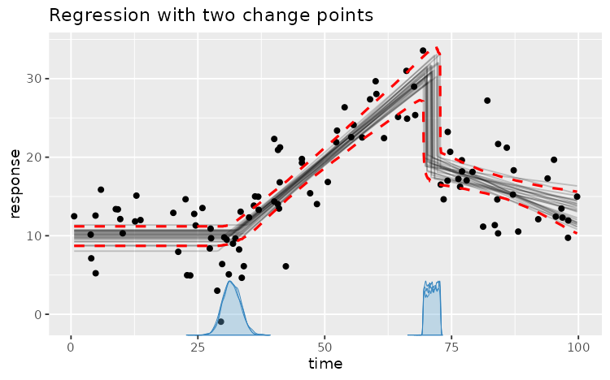

The model argument of mcp() is a list of formulas, one for each segment. A change point is
estimated between each pair of consecutive segments. This page describes how segments connect,
the formula syntax, and the underlying model. See mcp-priors for priors on the resulting parameters.
Details
Here is the demo model (see mcp_example("demo")):
model = list(
response ~ 1, # Plateau in the first segment (Intercept_1)
~ 0 + time, # Joined slope (time_2) in segment 2 which starts at cp_1
~ 1 + time # Disjoined slope (Intercept_3, time_3) at cp_2
)
Segment 2 continues from where the plateau left off, while segment 3 starts afresh with a new intercept.
Three rules govern how segments connect (with x as the change-point variable, i.e., time above):
Only included terms get coefficients. A segment includes the terms in its formula, plus an intercept unless removed with
0 +. Each included term gets a new coefficient (x_2,stateB_2) or reuses an existing one withsame().x-terms are measured from the change point.
x,x:z,state:x, andI(x^2)start at zero at the segment's change point and stop growing at the next change point.Joined or disjoined. Without an intercept (
0 + ...), a segment is joined: it continues from where the earlier intercept and x-terms left off. With an intercept, it is disjoined and starts afresh.
sigma and shape are required by the likelihood, so they include an intercept in segment 1.
Formula syntax. The general format of a segment formula is response ~ cp ~ predictors (e.g., y ~ 1 ~ 1 + x),
except the first segment has no change point and uses response ~ predictors. The response and
change-point parts can be omitted (cp ~ predictor assumes the same response; ~ predictor
assumes an intercept-only change point).
1. Response (segment 1 only):
y ~ ...: Standard continuous or count response (Gaussian, Poisson, Bernoulli).successes | trials(total) ~ ...: Binomial response (family = binomial()).y | weights(w) ~ ...: Observation log-likelihood weights (multiplies each observation's log-likelihood contribution byw > 0; affects posterior inference andlog_lik(), but not predictions).y | trials(total) + weights(w) ~ ...: Combine response auxiliaries using+.
2. Change-point modeling (cp, segments 2+):
1 ~ ...(or omitted, e.g.,~ x): Population-level change point (default).1 + (1 | id) ~ ...: Group-level change-point deviations around the population change point. Read more.
3. Regression formula (all segments): Read more
~ 1 + x: Disjoined slope with a new segment intercept.~ 0 + x: Joined slope (no new intercept).~ 1: Plateau (intercept only, no slope).~ x:state + I(x^2) + exp(z): Extended terms, interactions, and R-side bases (scale(),poly(),splines::ns()). Bases are evaluated before sampling and reused fornewdata.~ 1 + (1 | id): Group-level intercepts (or(1 + x || id)for independent slopes and intercepts). Read more.~ sigma(1 + x): Distributional parameters on the link scale (e.g., log residual SD). Read more.~ ar(1) + ma(1): Autoregressive and moving-average time-series residuals on the link scale (accepts regression formulas,series = id, andthreshold; include them in every segment where they apply). Read more.~ 1 + same(x)or0 + same(z, as = 1): Reuse a coefficient from the preceding segment (default) or from segmentas. Reused coefficients are estimated jointly from all segments where they are included, not fitted in one segment and copied to another.
The mcp model
An mcp model divides the change-point variable \(x\) into \(K\) segments separated by
ordered change points \(\tau_1 < \dots < \tau_{K-1}\). In each segment \(k \in \{1, \dots, K\}\),
the linear predictor \(\eta_i\) measures \(x\) from the change point \(\tau_{k-1}\):
$$\eta_i = \alpha_k + \beta_{k,1} (x_i - \tau_{k-1}) \quad (\text{with } \tau_0 = 0)$$
where \(\alpha_k\) is the value at the start of segment \(k\):
$$\alpha_k = \begin{cases} \beta_{k,0}, & \text{disjoined } (\sim \texttt{1 + x}, \text{ or } k = 1) \\ \alpha_{k-1} + \beta_{k-1,1} (\tau_{k-1} - \tau_{k-2}), & \text{joined } (\sim \texttt{0 + x}) \end{cases}$$
That is, a disjoined segment starts at its own intercept \(\beta_{k,0}\), while a joined segment continues from where segment \(k-1\) left off.
Here, \(\beta_{k,1}\) is the slope on \(x\) in segment \(k\). Intercepts and slopes are absolute values (not changes relative to preceding segments).
Other variables (e.g., + z + state) add \(\sum_j \gamma_{k,j} z_{j,i}\) in the segments where they are included.
They use their original values and are not part of \(\alpha_k\), which is why they can make a joined segment start with a jump.
The inverse-linked parameter is \(\mu_i = g^{-1}(\eta_i)\) via link function \(g(\mu_i) = \eta_i\),
representing the expected response for most families (or the success probability for binomial models,
where the expected count is \(n_i \mu_i\)). Distributional parameters (sigma(), shape(), etc.)
and autoregressive terms (ar(), ma()) follow this exact same segmented structure on their respective link scales.
See more details on the mcp website.
Time-series residuals (link-scale observation-driven GARMA)
Autoregressive (ar(p)) and moving-average (ma(q)) terms define a finite conditional recurrence
on the link scale (generalized autoregressive moving-average, GARMA). They support Gaussian (identity),
binomial (logit), Bernoulli (logit), Poisson (log), and negative-binomial (log) families.
If \(\eta^{\text{reg}}_t\) is the ordinary regression predictor from the segment formulas and \(\eta_t\) is the
predictor including serial dependence, the recurrence decomposes into components:
$$\begin{aligned} \text{AR}_t &= \sum_{j=1}^{p} \phi_{j,t} \left[g(y^*_{t-j}) - \eta^{\text{reg}}_{t-j}\right] \\ \text{MA}_t &= \sum_{k=1}^{q} \theta_{k,t} \left[g(y^*_{t-k}) - \eta_{t-k}\right] \\ \eta_t &= \eta^{\text{reg}}_t + \text{AR}_t + \text{MA}_t \end{aligned}$$
where \(\phi_{j,t}\) is the lag-\(j\) autoregressive (AR) coefficient at time \(t\),
\(\theta_{k,t}\) is the lag-\(k\) moving-average (MA) coefficient at time \(t\),
\(g(\cdot)\) is the link function, and \(y^*_t\) is the threshold-constrained observation with threshold constant \(c\) (set via argument threshold = 0.1 in ar() / ma()) to keep residuals finite on the link scale:
Gaussian: \(y^*_t = y_t\).
Poisson / Negative Binomial: \(y^*_t = \max(y_t, c)\) to prevent \(\log(0)\). Here \(c\) replaces zero counts with a small positive threshold value.
Binomial / Bernoulli: \(y^*_t = \min(\max(y_t, c), n_t - c) / n_t\), where \(y_t\) is observed successes, \(n_t\) is the number of trials (\(n_t = 1\) for Bernoulli), and \(c\) constrains counts to the interval \([c, n_t - c]\) before converting to a rate, preventing \(\text{logit}(0)\) and \(\text{logit}(1)\).
Implications:
For an \(N\)-order component, the last \(N\) values before the segment's change point are input to the first \(\eta_t\) in the segment.
AR and MA components apply only in segments where they are included.
AR coefficients are not jointly constrained to stationarity; nor MA coefficients to invertibility.
See the arma article for more details.
See also
mcp(), mcp-priors, mcp_pars() for the parameter names of a fitted model.